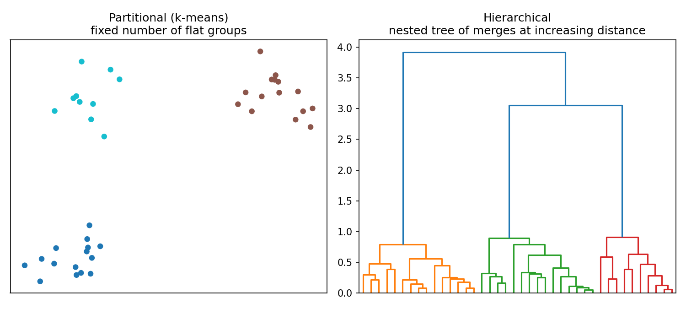
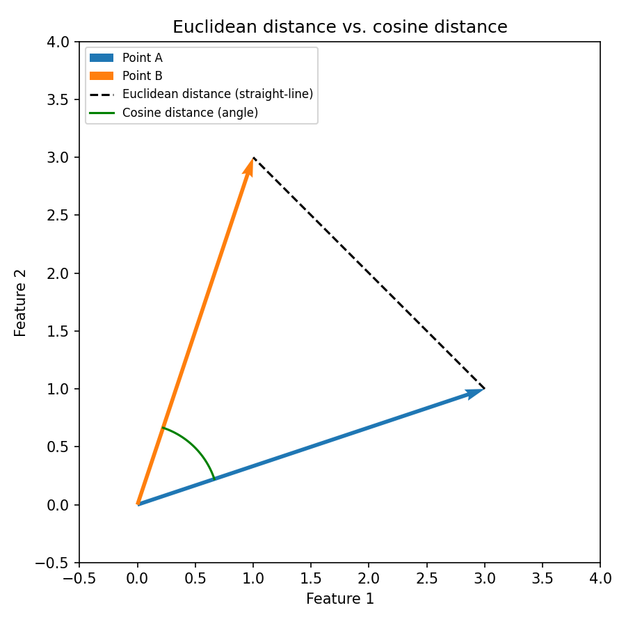
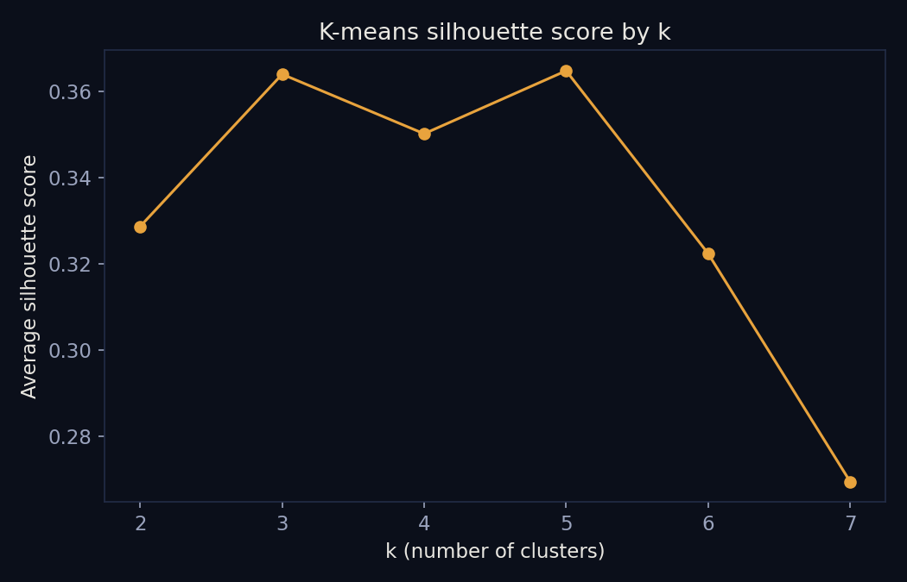
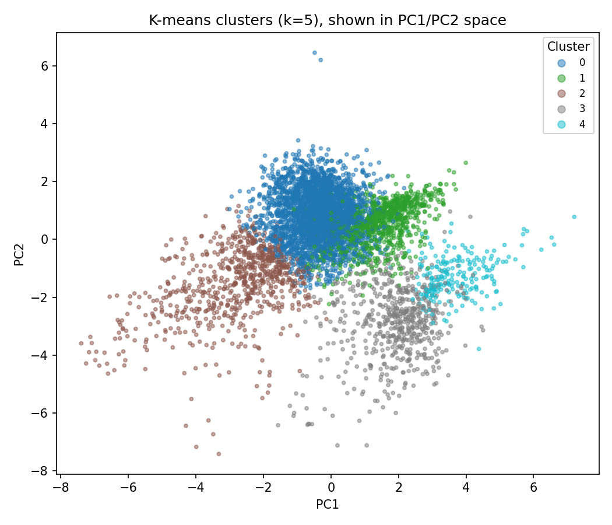
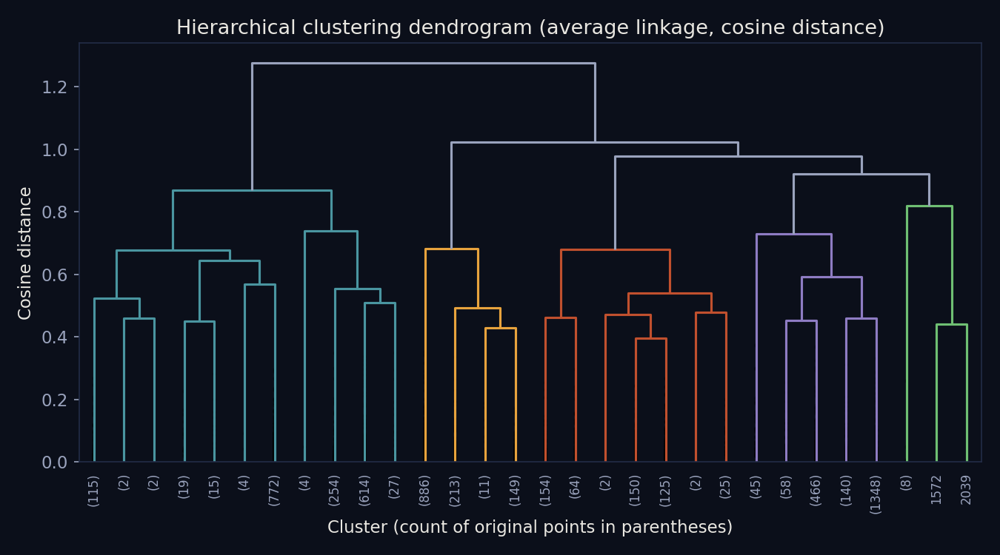
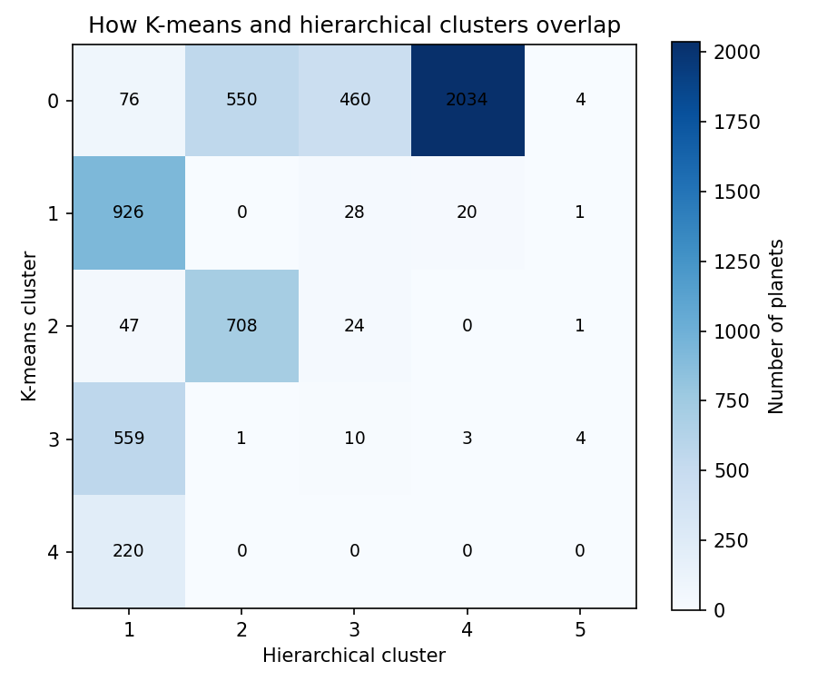

Clustering
Clustering
Overview
Clustering is an unsupervised method: it looks for structure in data that has no labels to begin with, grouping observations that are similar to each other and separating ones that are not. Two broad families of clustering were used here. Partitional clustering, specifically k-means, picks a fixed number of groups ahead of time and assigns every point to whichever group center it is closest to, adjusting the centers until the assignment stabilizes. Hierarchical clustering takes a different approach: it starts with every point as its own group and repeatedly merges the two closest groups, building a nested tree of merges rather than a single flat partition. Both families need a notion of distance between points, and the choice of distance measure matters. Euclidean distance measures straight-line distance between two points and is sensitive to the overall scale of each value. Cosine distance instead measures the angle between two points treated as vectors, ignoring their magnitude entirely, which makes it a natural fit when the direction of a pattern matters more than its size.


Here, clustering is used for discovery rather than prediction: the goal is to see whether confirmed exoplanets naturally separate into a handful of recognizable physical types, or whether they instead form a continuum with no sharp boundaries, directly picking up the question raised in the Introduction about the sub-Neptune and other planets with no Solar System counterpart.
Data Prep
Clustering requires only unlabeled numeric data, so the categorical columns (planet name, discovery method, size class label, and so on) were dropped entirely for this step. Eight numeric columns were used: orbital period, planet radius, planet mass, equilibrium temperature, host star temperature, host star radius, host star mass, and system distance. Rows missing any of these eight values were excluded, leaving 5,676 of the original 6,366 planets. Because these properties span several orders of magnitude (orbital period alone ranges from a fraction of a day to over a million years), each column was log-transformed and then standardized to zero mean and unit variance before clustering, so that no single feature dominates the distance calculation purely because of its raw scale.

Full prepared data: exoplanets_clean.csv (the raw and cleaned files behind it are linked from Data Gathering and Cleaning & Prep).
Code
K-means and hierarchical clustering code: clustering_pca.py (Python, uses scikit-learn and scipy).
Results
K-means was run at four values of k (2, 3, 4, and 5), and the average silhouette score, a measure of how well-separated the resulting clusters are, was computed for each. The scores were close across the board (0.33 to 0.36), with k=3 and k=5 essentially tied for the best score and k=4 slightly behind both. This is itself informative: there is no single value of k that stands out sharply, which suggests the underlying population does not split into perfectly crisp groups.


Hierarchical clustering was run using cosine distance with average linkage (cosine distance cannot be combined with Ward or centroid linkage, so average linkage was used instead). The resulting dendrogram shows one especially large jump in merge distance right at the final merge, a common heuristic for reading how many clusters a dendrogram actually supports, and that jump points to just 2 clusters as the most defensible cut.

Comparing the two methods directly: cutting the hierarchical tree at k=5 (to match k-means) and measuring agreement with the Adjusted Rand Index gives a score of 0.41, out of a maximum of 1.0 for perfect agreement. That is a moderate but incomplete overlap, the two methods agree there is more than one group, but settle on different boundaries.

Conclusions
Neither method found sharply separated groups of exoplanets, and that is itself a finding that matters for the topic. The flat silhouette curve, the moderate agreement between k-means and hierarchical clustering, and the dendrogram's preference for a small number of clusters together suggest that exoplanet physical properties form more of a continuum than a set of distinct categories, echoing the sub-Neptune problem raised in the Introduction: common size and mass ranges really do blur together rather than falling into tidy bins. That has a direct bearing on the central question. A population of planets this continuous means that any attempt to flag "potentially habitable" worlds based on physical properties alone, including the rough temperature-zone rule used in Cleaning & Prep, is drawing a somewhat arbitrary line across what is actually a gradient, not a boundary nature has clearly drawn.